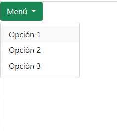

Enunciado
A veces el código que escriben los desarrolladores de software no siempre hace lo que se espera sino algo totalmente distinto. Así que hay que averiguar la razón y pasar a depurar. Un depurador no puede revelar todos los problemas del código, pero sí puede ayudar.
Le solicitamos:
- Ejecute el siguiente script en el navegador Chrome y en Microsoft Edge.
- Y después, depure el código para hacer que el programa funcione:
var numero = prompt("Introduce un número entero"); var resultado = parImpar(numero); alert("El número " + nmero + " es " + resultado); function parImpar(numero) { if (numero % 2 = 0) { return "par"; } else { return "impar"; } } -
A continuación, modifique el script del menú que se ha creado con el fin de crear un menú desplegable que deberá llamarse menú y al desplegarse se deberán ver opción 1, opción 2 y opción 3. El botón menú deberá ser verde y para cambiar el color deberá modificarse su clase. El resultado deberá ser como la siguiente imagen:

Actividad asociada al CE1.6 y CE3.2
CE1.6: Distinguir los métodos para ejecutar un script utilizando varios navegadores web.
CE3.2: Identificar los objetos, sus propiedades y sus métodos y su funcionalidad dentro del script ya desarrollado con el fin de ajustarlos a la página donde se va a integrar.
Solución:
Primero voy a marcar los errores en el script.
var numero = prompt("Introduce un número entero");
var resultado = parImpar(numero);
alert("El número " + nmero + " es " + resultado);
function parImpar(numero) {
if (numero % 2 = 0) {
return "par";
} else {
return "impar";
}
}La versión corregida:
var numero = prompt("Introduce un número entero");
var resultado = parImpar(numero);
alert("El número " + numero + " es " + resultado);
function parImpar(numero) {
if (numero % 2 == 0) {
return "par";
} else {
return "impar";
}
}El tercer punto supongo que hace referencia al Apartado 4.1.3. Por lo que modifico ese menú.
Para cambiar de color el botón del menú hay que sustituir la clase 'btn-primary' por la clase 'btn-success'
Como estamos haciendo Javascript aquí dejo un ejemplo en el que se pueden cambiar los colores dinámicamente.
Elija el color con los botones siguientes:
Actividad asociada al CE1.6
La detección del agente de usuario tiene sus limitaciones y puede no ser completamente confiable. Además, en general, es una buena práctica de desarrollo web evitar la detección de navegadores y, en su lugar, usar características de JavaScript y CSS compatibles con todos los navegadores modernos.
Actividad asociada al CE3.2
En el código proporcionado, hay un objeto 'window' implícito que es el objeto global en el navegador web y contiene varias propiedades y métodos. Aquí está el análisis de los objetos, propiedades y métodos presentes en el script:
- Objeto "window": Es el objeto global en el navegador web.
- Propiedad "prompt": Un método del objeto "window" que muestra un cuadro de diálogo modal con un mensaje para que el usuario ingrese un valor. Devuelve el valor ingresado por el usuario como una cadena de texto.
- Propiedad "alert": Un método del objeto "window" que muestra un cuadro de diálogo modal con un mensaje y un botón de aceptar. En el código, se utiliza para mostrar el resultado final.
- Objeto "window.esParOImpar": Es una función definida en el ámbito global (objeto "window").
- Propiedad "esParOImpar.numero": Es una variable local de la función esParOImpar que almacena el número entero ingresado por el usuario.
- Propiedad "esParOImpar.resultado": Es una variable local de la función "esParOImpar" que almacena el resultado de la función "parImpar(numero)".
- Método "esParOImpar()": Es una función que se ejecuta al invocar "esParOImpar()". Realiza las siguientes acciones:
- Muestra un cuadro de diálogo para que el usuario ingrese un número entero.
- Llama a la función "parImpar(numero)" y almacena su resultado en la variable "resultado".
- Muestra un cuadro de diálogo con el número ingresado y su clasificación como "par" o "impar".
- Objeto "window.esParOImpar.parImpar": Es una función definida dentro de la función "esParOImpar".
- Propiedad "esParOImpar.parImpar.numero": Es un parámetro de la función "esParOImpar.parImpar" que recibe un número.
- Método "esParOImpar.parImpar()": Es una función que determina si un número es par o impar. Devuelve "par" si el número es divisible por 2 y "impar" en caso contrario.
He creado un botón (<button>) para ejecutar la función esParOImpar() al hacer clic:
<button type="button" class="btn btn-primary" onclick="esParOImpar()">Ejecutar script</button>